Crafted by Yu with ❤
你好, 我是 肖宇！
产品经理 Scrum Master Product Owner 设计师 程序员 极客 持续学习者
我是一位充满激情且好奇心强烈的产品经理，有多年产品经验；对工具和 AI 辅助的流程自动化有浓厚兴趣。
- 很高兴见到你！
肖宇
产品经理 - 注重细节 数据驱动 追求完美你好！我是 肖宇，一位拥有 8 年工作经验并有计算机科学背景的资深产品经理，刚在澳大利亚国立大学完成机器学习的硕士学位。我在 2C、2B、SaaS 以及硬件等多个领域锻炼了自己的技能，展示了我在以客户为中心的产品开发和数据驱动策略方面的熟练程度。
我的实战经验包括了互联网产品开发的全周期，从构思到迭代优化。我领导过各种类型的产品，特别是在线设计编辑器和智能停车系统，显示出我对工具类产品的兴趣和专长。
作为一位严谨的逻辑思考者，我成功地领导了一个由 15 名成员组成的产研团队，显著提高了用户参与度和留存率。我也是一位拥有 Scurm 的 Product Owner 认证的专业人士，擅长领导从概念到现实的敏捷项目。
我对于将人工智能融入工具产品充满热情，渴望利用我的技能在一个快节奏的科技公司中和产品共同成长以及提高客户满意度。
-
8
年经验 -
四倍
活跃用户数量 -
25%
收入增长
- 工作经历
-
2022.11 - 2023.02
产品经理（实习）
Mochi Labs堪培拉
• 设计在线文档编辑器功能，包括数据文档基础模块、数据可视化流程和视频笔记等功能；
• 参与创建 BP、产品愿景、路线图、用户故事、用户画像等：参与制定产品的商业计划书（BP），明确产品愿景和发展方向；协助规划产品的发展路线图，并撰写用户故事和用户画像，以确保产品能够满足用户需求。
-
2020.07 - 2022.07
产品经理
爱设计北京
• 解决在线图片编辑器的可用性问题，优化使用体验：通过用户研究和反馈收集，分析用户行为和需求，找出现有编辑器中的问题，并提出改进措施以提高产品的可用性和用户体验；
• 图片编辑器产品架构重构和 UX 优化：领导团队进行在线图片编辑器产品架构的重构，优化用户界面和用户体验，确保产品功能完整且易于操作。重构后，编辑器的用户留存率提升了25%，用户平均使用时间增加了40%；
• 面向大客户提供定制的编辑器 SDK 接入能力：与技术和销售团队合作，为大客户提供定制化的编辑器 SDK 接入解决方案，以满足其特定需求，确保顺利的产品整合和部署；
• 整理需求，搭建通用的 SDK 平台：在项目过程中，收集和整理来自不同客户的需求，基于这些需求搭建通用的 SDK 平台，以提高产品的复用性和扩展性；
• 素材管理后台：与运营和内容部门协调，确认图片管理流程，规划并从零开始搭建内容管理系统（CMS），确保运营同学高效率的对图片素材进行导入和分发管理。
-
2018.06 - 2019.09
产品经理 - 网页端负责人
创客贴北京
• 协调整个 Web 侧产品架构，主要负责图片编辑器的功能规划和实现。在任期内活跃用户数量增加了四倍；
• 主导完成商业模式从单一订阅制到“订阅+内容消费”的调整过渡以及 Web 端整体的 UI/交互更新优化；
• 推动以用户为中心的设计，优化更新现有的编辑器的核心工具体验，如画布中的元素操作交互优化、文字/素材的展示分发等。针对新媒体用户群，推出提高留存的功能，如文字样式、Gif 图片生成等；最终 NPS 达到 78 分；
• 推出了艺术文字效果，首周点击量 150k，而且使用艺术字的模板的点击量整体高出 20-30%；
• 运营协助和用户增长：设计优化 SaaS 工具中素材、模板的内容分发模块；协助产品运营工作，如获取用户画像、优惠券需求以及基础数据需求；完善用户反馈和数据渠道，监控关键性能点的变化状况。
-
2015.08 - 2018.04
产品负责人
中钢城发科技有限公司北京
• 在 0-1阶段，深入了解路外/路内车场的运营工作，找出了线下运营流程，并为平台提出了针对性的线上解决方案和流程。完成了首期平台的调研和测试，确保系统的稳定性和功能可用性，并成功推动平台上线；
• 在迭代阶段，与运营、商务和项目等部门进行有效沟通，确定新的需求，并成功推动需求的快速落地。例如，制定并完成了第一版手持 PDA 上的收费 App 及配套的收费流程，优化了施工流程，降低了施工人员的要求和出错成本；
• 参与制定并实施了车场运营数据模块，该模块参考行业报告及相关学术论文，总结出停车运营的关键评估数据，并以此为基础，完成了车场总览首页和数据分析模块的设计和实施；
• 参与设计并实施了车场线上管理系统，将费率设置、收费员管理等功能从线下车场移到云端，方便运营人员远程对车场进行管理；
• 线下参与北京、呼和浩特、六盘水等 20 多个智能车场与平台相关项目的招投标及实施，和利益相关方沟通和谈判确保项目成功执行。每天生成10,000张停车单。
-
2013.06 - 2015.07
产品助理 -> 产品经理
鹏博士集团北京
• 负责商业 Wi-Fi 的云端平台功能设计与优化，编写产品需求文档（PRD），协调资源推进项目；
• 参与智能路由器相关的智能家居业务，以智能路由为支点，研究智能家居常见技术和协议，着重研究了802.15.4相关协议，如 Zigbee和 Thread；
• 基于研究结果，参与提出智能路由的感知网络初版需求，目的是优化设备接入流程，服务于集团旗下长城宽带的业务。
- 技能
我的技能


- 认证和语言
-
中文/普通话
• 母语
-
英语
• IELTS：7 （2020年）
-
• 获得日期：2023年6月19日
-
• 获得日期：2023年6月14日
- 软件与工具
熟练掌握:
-

-
-
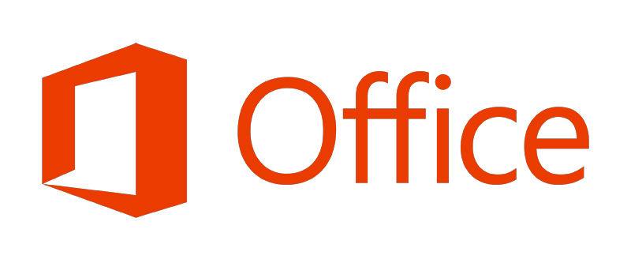
-

-
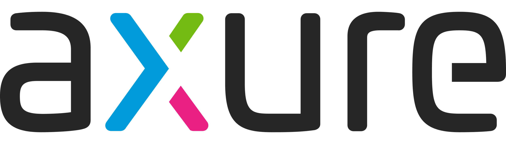
-
-
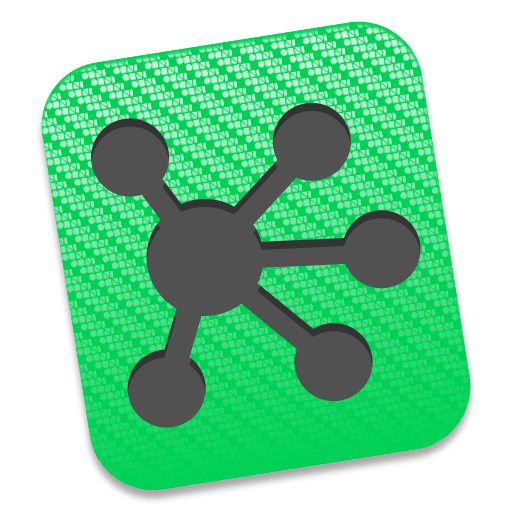
-
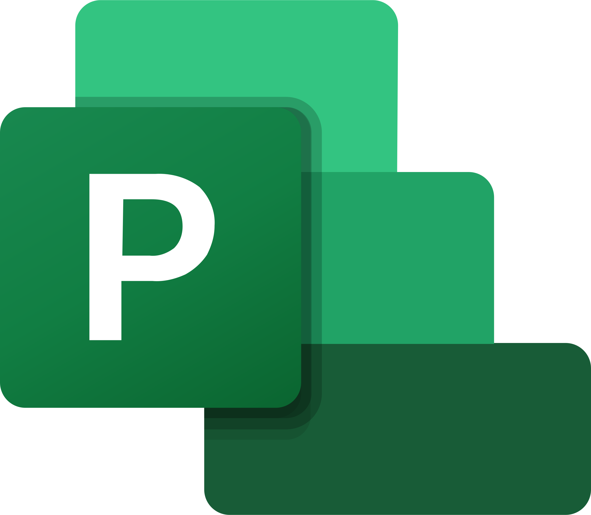
-
-
-
-

-
-

-
- 过往作品集
产品相关工作内容
点击查看更多详细内容。
更新中...
-
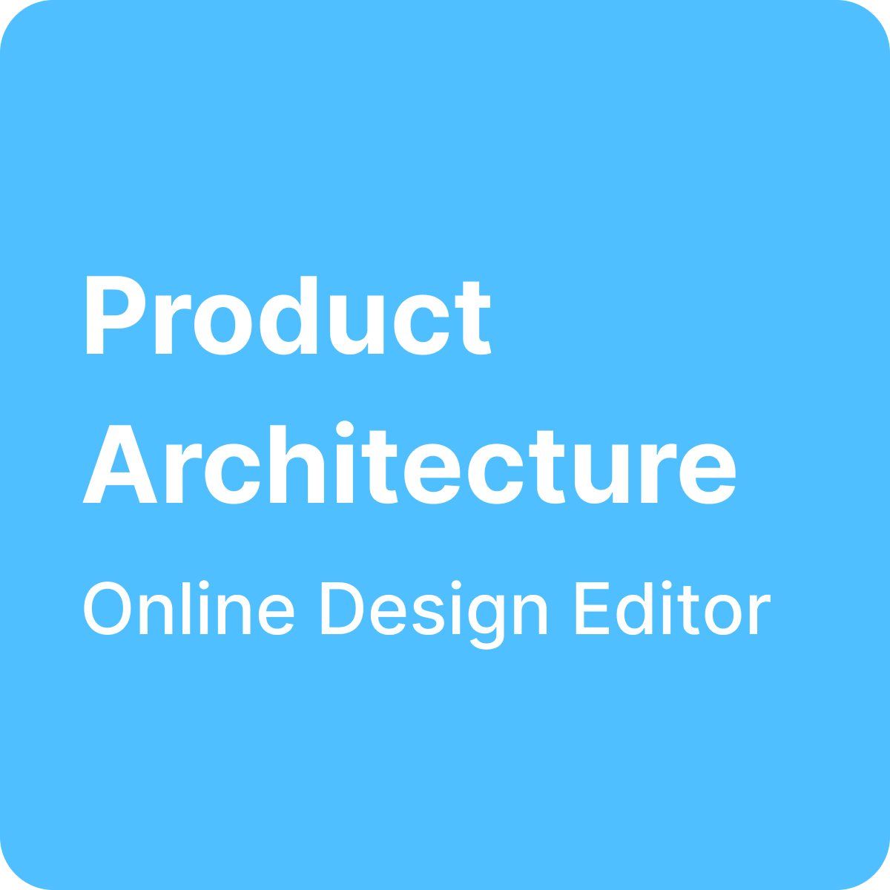产品架构
产品架构案例：在线设计编辑器 (2019)
工具：Figma*注意：这是一个链接，点击后将会在新窗口打开一个 Figma 文件。
• 该文档从最基础的元素开始解在线编辑器的整体产品架构和方向。目的在于统一各部门和角色的产品理念和方向，减少因产品或技术理解误区产生的合作问题。同时帮助技术同事把握关键功能，以便更好的进行技术准备和内容组织。
-
人工智能
个人 AI 项目：大语言模型驱动的虚拟世界和虚拟角色 (2023-现在)
工具：PyCharm, Git, Python, ChatGPT, 向量数据库项目地址：Github 项目。
• CyberNexus 是一个虚拟世界项目，通过大语言模型的自然语言处理和推理能力来驱动角色行为和交互；
• 此项目借助 ChatGPT API、prompt 工程和 embedding 数据库来赋予角色思考和记忆能力；
• 用户或者游戏中的角色可以和世界中的其他角色进行交流，你可以在 这个聊天记录示例 中看到基础的角色之间是如何思考以及为了实现目标而交流的。
工具：PyCharm, Git, Python, ChatGPT, 向量数据库
项目背景
CyberNexus 是一个虚拟世界项目，旨在通过大语言模型的自然语言处理和有限推理能力驱动世界中的角色。借助 OpenAI 的 ChatGPT API、prompt 工程设计和 embedding 数据库，赋予角色思考和记忆能力。
项目地址
地址为：CyberNexus.
你可以尝试自己安装运行，或者如果你只是想看看效果，也可以在 这个聊天记录示例 找到我们调试出来的一些记录。
目标与目的
构建自驱动的机器人，使角色之间能实时互动，实现虚拟社区构建，提高交互的真实感。
产品功能
・角色规划、交互、记忆和反思的能力；
・创建角色，以及对应的 bot；
・角色的记忆和反省能力；
・两个/多个角色之间的互动聊天等。
产品整体逻辑
如果图片太小可以点击图片，在新窗口中查看。

下一步计划
CyberNexus 项目通过大语言模型构建了一个充满活力的虚拟世界，下一步将进一步增强角色的能力，构建虚拟社区，实现更丰富的功能。
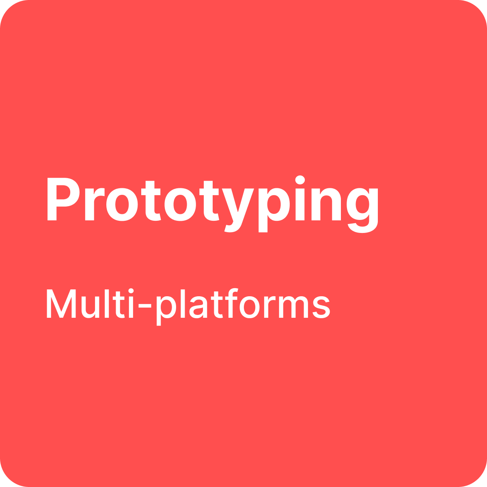原型设计多平台的原型设计案例 (2014-2021)
工具：Axure, Figma, Sketch• 此处包括了针对不同平台的多个原型设计案例，涵盖了桌面应用，SaaS，移动应用，Web 等。
• 根据产品当前所处的阶段和用户的分组画像，以及原型面向的对象或可能的使用方式，来决定使用高保真或者低保真原型。
工具：Axure, Figma, Sketch
案例1：内容管理系统设计 (2021)
产品类型：管理面板
平台：桌面
整体结构和主要流程
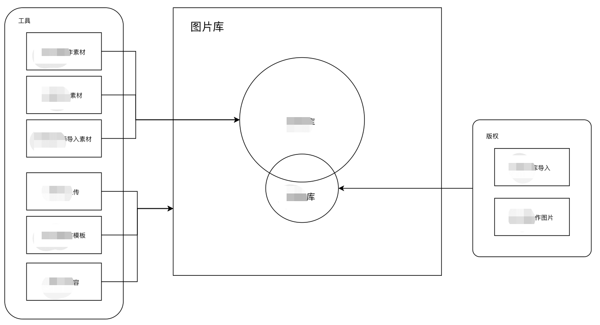从零开始设计图片管理的 CMS，这是一个跨部门的平台，涉及到上传和传递图片的不同流程。
工作流程
 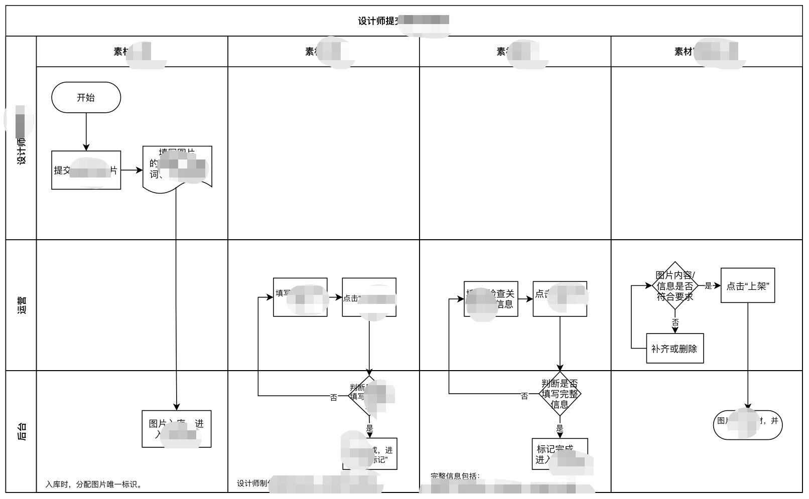
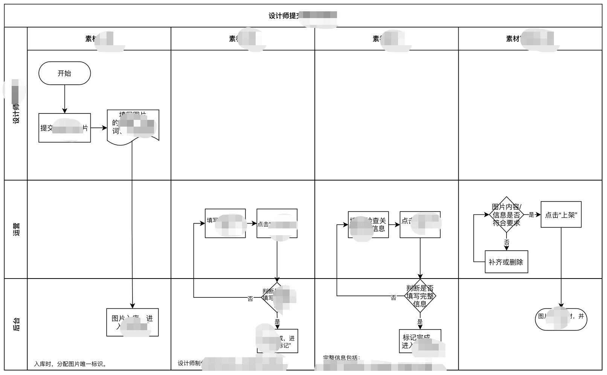
与多部门的同事一起组织完整且详细的工作流程。
原型
使用 Axure 设计和实现平台的原型，包括多个模块和页面。
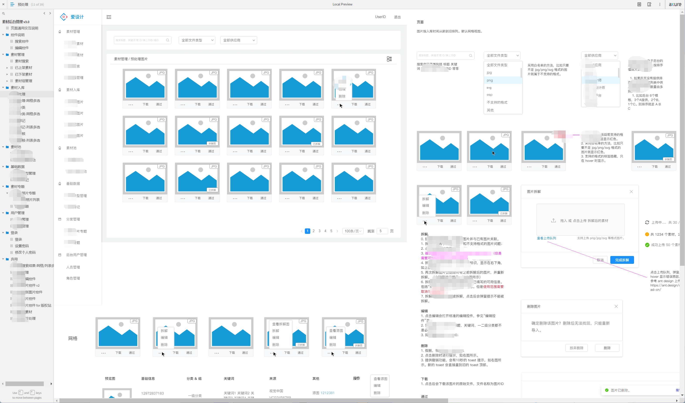案例2：文件管理 (2018)
产品类型：SaaS
平台：桌面
简单演示SaaS的文件管理功能，由 Figma 完成。

案例3：移动图片编辑器 - 微信小程序 (2018)
产品类型：微信小程序
平台：移动
微信平台的在线图片编辑器原型，包括剪裁、调整大小、文字、绘图工具等功能。
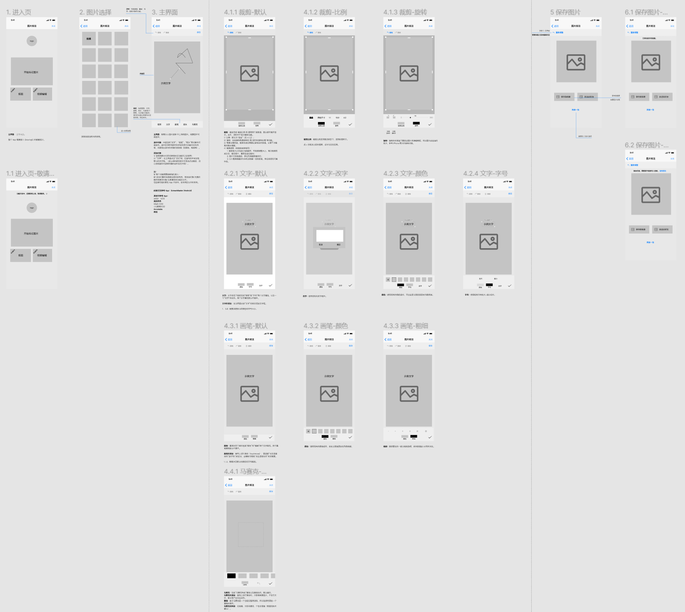案例4：设计分享 (2020)
产品类型：跨平台功能
平台：桌面 & App & 微信小程序
这是一个相对简单但复杂的功能，它是跨平台的，涉及到复杂的权限检查。
 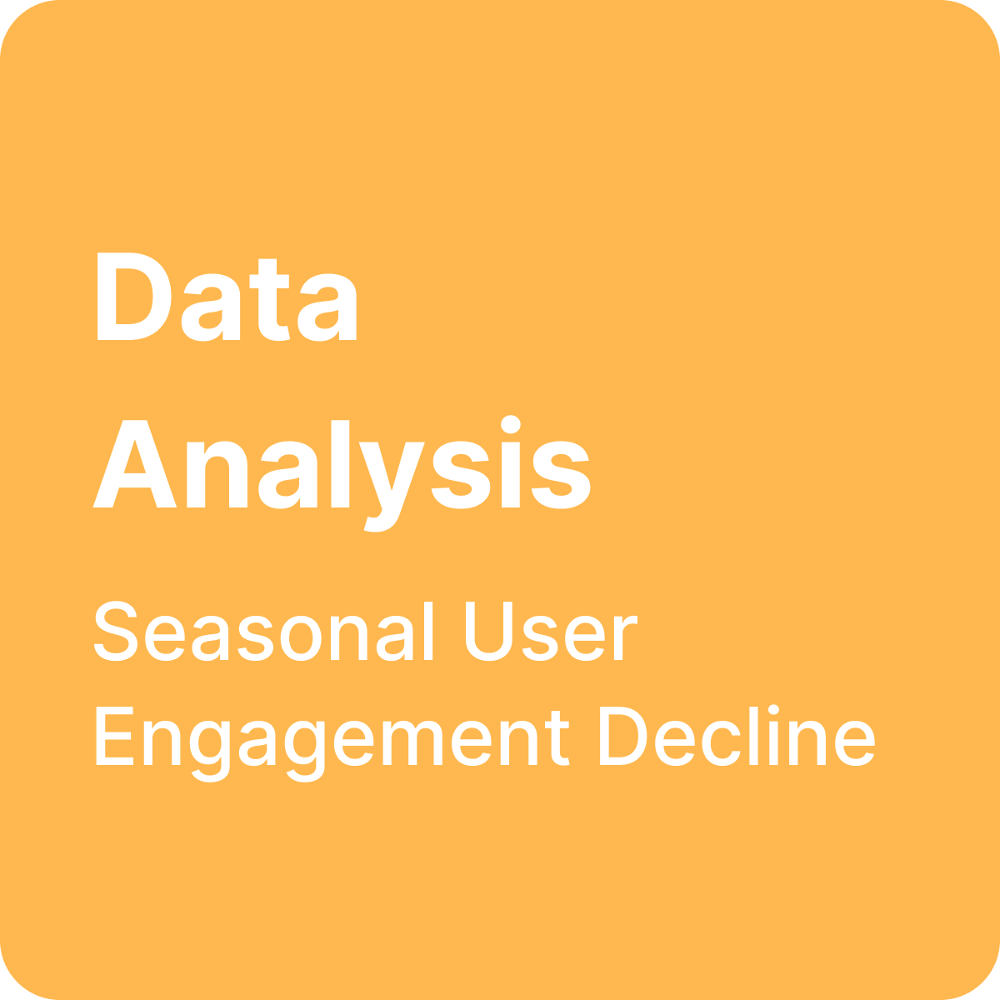数据分析
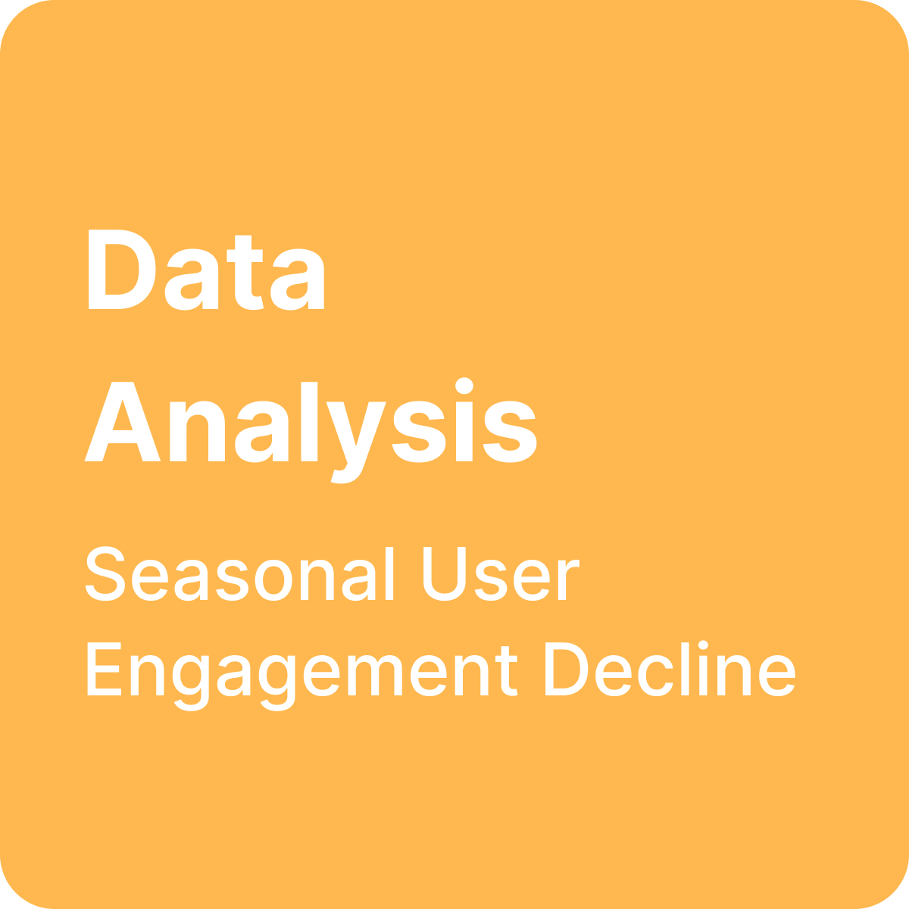数据分析数据分析案例：应对季节性用户参与度下降（2018）
工具：Tableau，MySQL，Google Analytics• 此案例研究探讨了夏季用户参与度的显著下降，揭示了二线城市和教育用户的明显下滑的分析流程。
• 通过数据分析和用户访谈，我们确定了暑假是关键因素。我们制定了响应策略，例如季节性内容，用户保留程序和反馈机制。
工具：Tableau，MySQL，Google Analytics
背景
在7月和8月，我们观察到活跃用户群体出现了意外的大幅下降（超过10%）。我被任务要求理解这种下降背后的原因，并制定响应策略。
问题识别
我最初尝试通过直接与一组常规用户进行沟通来识别潜在问题。然而，与十几位用户的讨论并没有明确指出任何确定性的问题，这促使我们进行更深入的数据驱动分析。
数据分析及发现
我利用 Google Analytics 和我们的后端数据，进行了全面的用户画像分析。
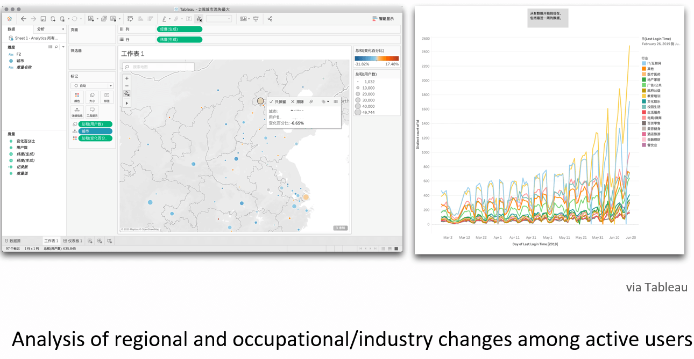分析揭示了两个关键的观察结果：
- 1. 活跃用户数量的减少在二线城市最为明显，一线城市的变化可以忽略不计。
- 2. 我们的教育或校园用户出现了大量的流失。
洞察与假设
这些模式导致了一个假设，即在7月和8月典型的暑假可能影响了我们的用户参与度，特别是教育用户。
验证
为了验证这个假设，我对来自二线城市和教育部门的用户进行了专注的访谈。反馈证实了这个假设，暑假成为使用率下降的主要驱动力。
解决方案与策略
有了这些洞察，我们制定了一套策略来抵消季节变化的影响：
- 1. 季节性内容策略：引入了针对非学术用户的季节主题和功能，以提高夏季的参与度。
- 2. 用户保留计划：启动了针对性的保留计划，如夏季竞赛，奖励和互动活动，以在假期期间保持用户的参与度。
- 3. 用户反馈：加强了反馈机制，以更好地了解用户需求，并相应地调整我们的产品。
结论
通过结合用户互动，深入数据分析和专注用户访谈的混合方法，我们不仅理解了活跃用户数量突然下降的原因，而且制定了有效的策略来减轻影响。
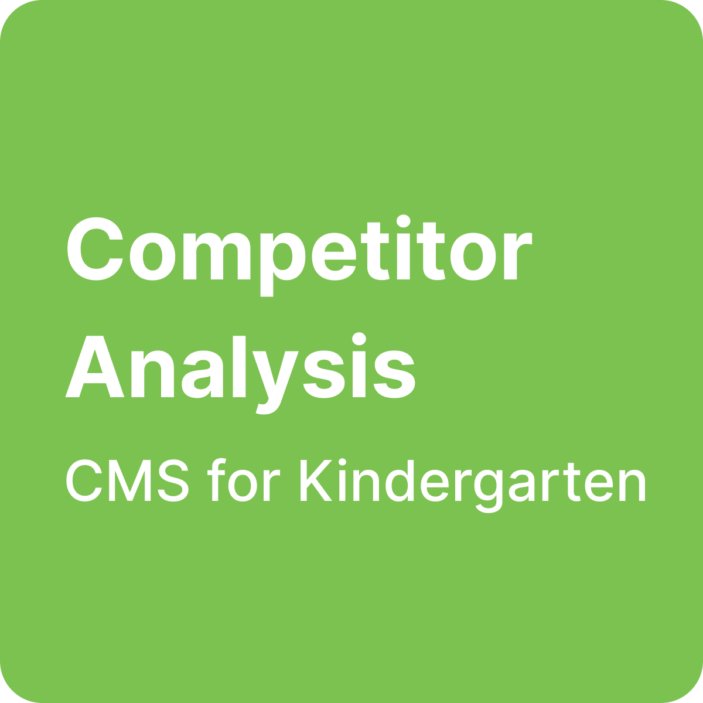竞品分析竞品分析案例：幼儿园 CMS 平台的分析 (2022)
工具：Figma，思维导图*注意：这是一个链接，点击后将会在新窗口打开一个 Figma 文件。
• 这是一个知识/内容管理系统的初步分析。
• 利用广泛的产品使用、公司财务和行业洞察，我总结了产品的架构、设计原则、用户基础和收入，然后提出了改进产品架构和模块组件的建议。
用户体验设计交互设计案例：图像剪裁控制器 (2019)
工具：Figma*注意：这是一个链接，点击后将会在新窗口打开一个 Figma 文件。
• 这是一个复杂的图像剪裁控制器的详细交互设计展示。
• 该工具旨在在画布上可视化和操作图像，提供用于缩放和剪裁图像的各种控制模块功能。这些模块以复杂的方式相互连接，允许对图像的不同属性进行精确调整。
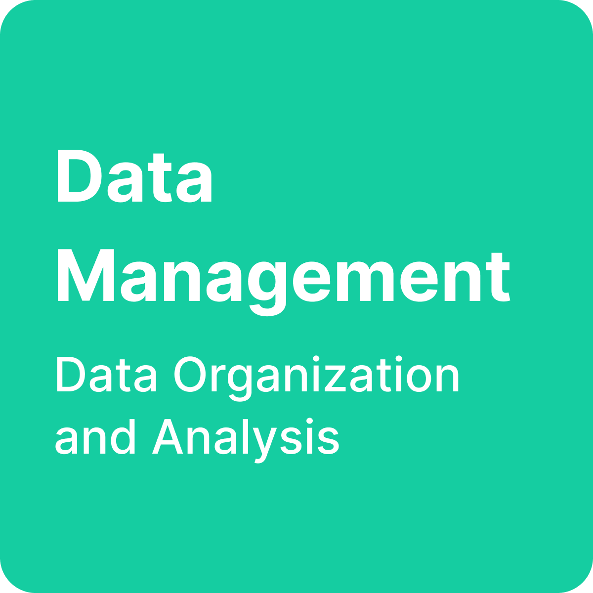数据管理数据平台案例：SaaS 的数据管理系统 (2016)
工具：Excel, Figma• 数据跟踪、清洗、分析和展示系统的建设过程。
• 包括：关键指标识别，细分至基本数据列表，数据流设计，数据分析，以及数据展示。
• ps: 大屏展示相关的产品设计，也有相关案例。
工具：Excel, Figma
背景
在我们的产品基础开发完成后，我们将重点转向了精细的运营和用户行为分析。因此，我被指定来组织产品的基础数据管理系统。
沟通与指标确定
通过跨部门沟通，我已经能够确定各个利益相关者最关心的数据指标。这需要对每个部门的运营和目标有深入的理解，以及将这些转化为可行的数据查询的能力。
例如：在一个与营销团队的项目中，我确定了他们需要的数据，包括客户获取成本，保留率，和生命周期价值。通过定义这些关键指标，我使营销团队能够衡量不同策略和活动的效果。
数据指标的分解和解剖
我将每个高级度量标准分解为底层的基础数据，如用户行为和产品性能。这个过程允许更细致的洞察和更好的问题诊断。
例如：我将客户获取成本分解为转化率和获取新客户的数量等因素。这为团队提供了关于哪个因素可以优化以降低成本的洞察。
事件追踪与数据表组织
设计数据收集的基础设施是一个关键的任务。我计划并实施了事件追踪机制，以有组织和逻辑的方式捕获必要的数据点。
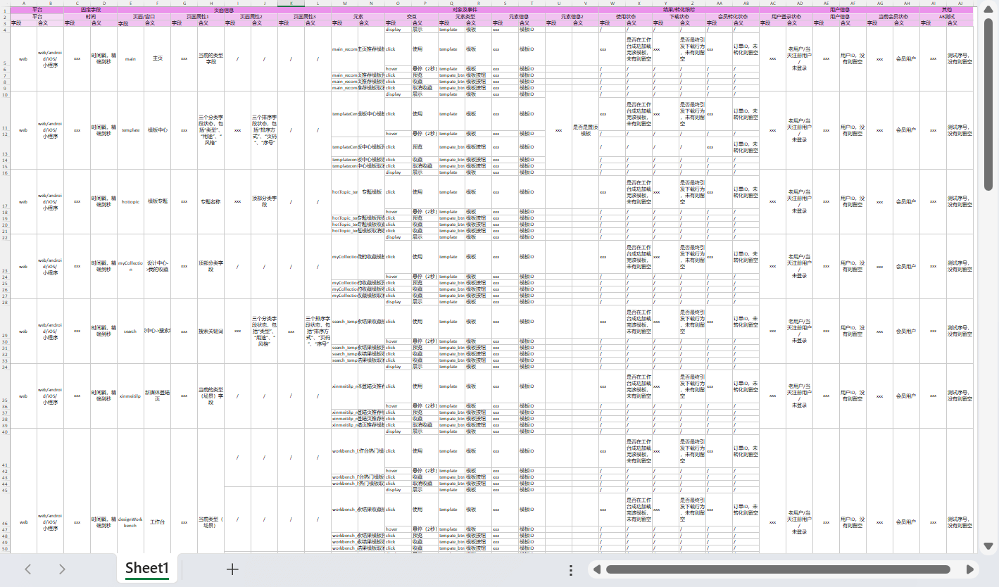后台数据展示设计
我确保处理后的数据以容易理解和可行的格式呈现。使用数据可视化工具，我创建了有效地代表数据和突出关键洞察的仪表板。
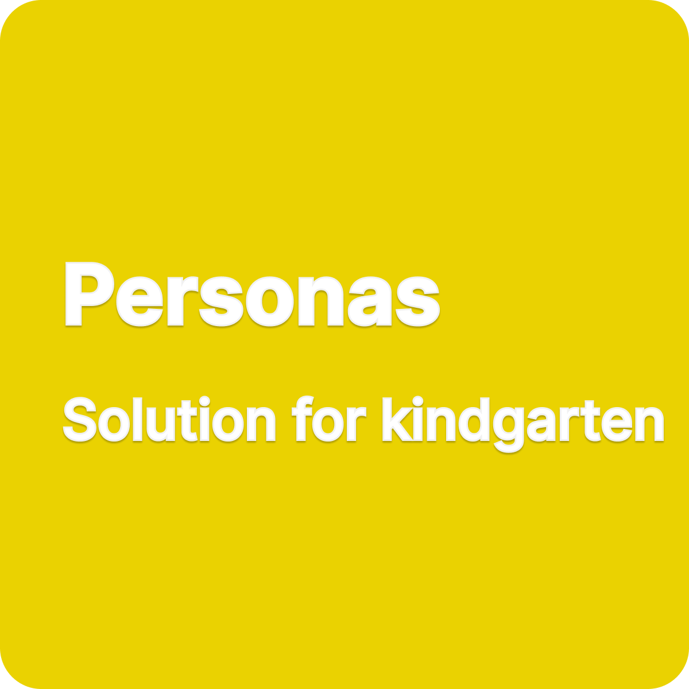用户画像用户画像案例：幼儿园教师的用户画像 (2023)
工具：Notion, Questionnaire• 幼儿园教师的用户画像。
• 研究方式包括：通过收集社交媒体和论坛的信息、与教师朋友交谈、发送问卷、收集他们的文件和日常时间表等。
• 这个用户画像是为早期产品设计的，所以相对来说较为宽泛，未进一步的进行用户分层。
工具：Notion, Questionnaire
背景
一位幼儿园教师的用户画像。
这个用户画像是为早期产品设计的，所以性质上比较泛化。
然而，对于当前的用户故事来说，这个画像的详细程度已经足够了。
内容
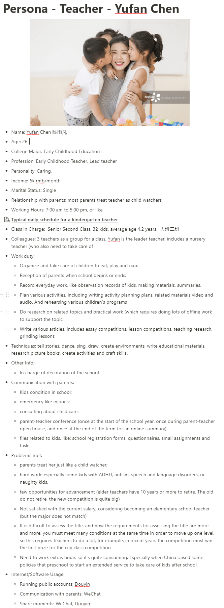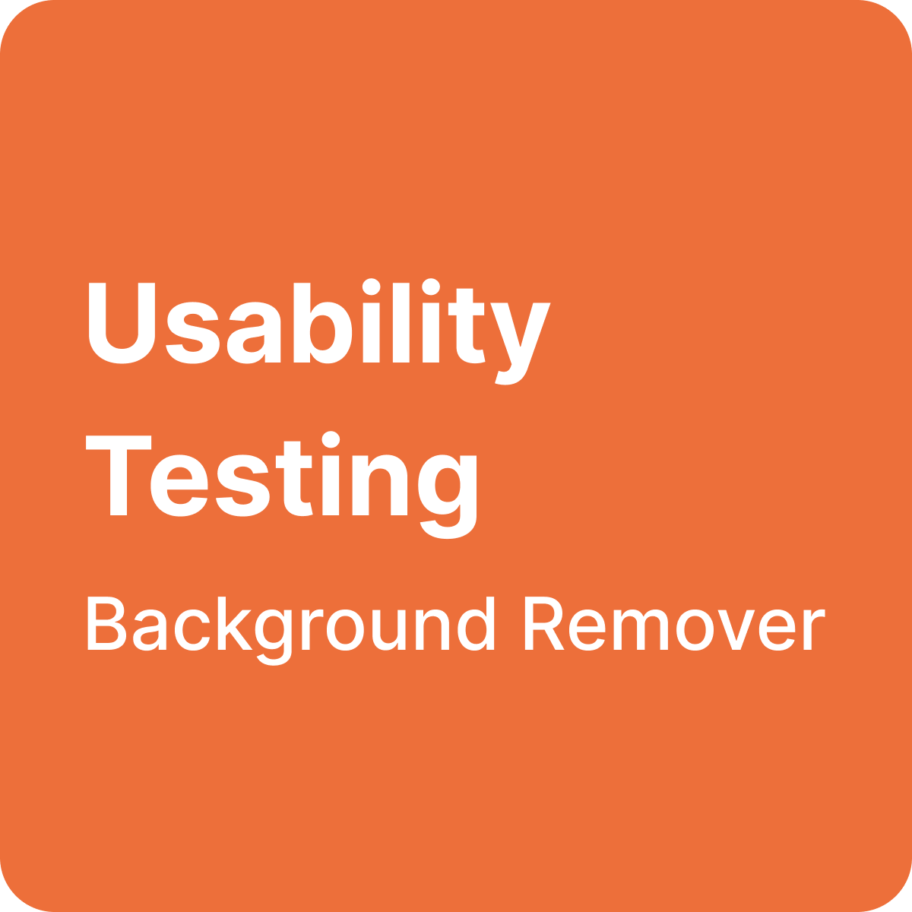可用性测试可用测试案例：图像背景移除工具的可用性测试 (2019)
工具：Zoom, Keynote, TeamViewer• 我们为新的在线抠图工具进行了可用性测试。测试包括各种难度级别的任务，并在完成后进行分析。
• 识别的主要问题包括用户交互期望不符、长时间任务中的不耐烦，以及超过边界时的调整困难。基于这些洞察，我们改进了功能指导、后端处理速度以及交互控件的定位和逻辑。
工具：Zoom, Keynote, TeamViewer
背景
在我们的核心图片剪辑功能完成后，我们决定创建一个在线抠图工具。当时，市场上类似的产品非常稀少，这导致我们对用户接受度和产品理解存在不确定性。因此，我们决定进行实际用户的可用性测试。
团队和职责
我们的可用性测试是与用户运营和设计的同事一起组织的。我负责设计整体测试过程，关键数据指标，编写测试问题/案例，并与设计团队一起完善交互细节。用户运营的同事从各行业有意识地招募了 3 个设计师用户和3个一般用户。
测试任务说明
我选择了四张难度递增的图片作为任务。
我分配了相关的过程任务，如上传和下载图片，调整画笔大小等。
任务说明表：
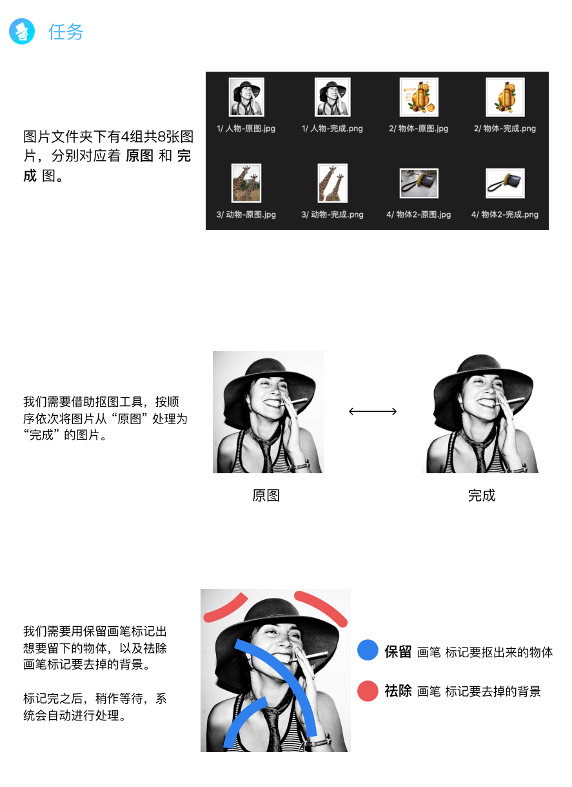整个过程都被录像，运营同事提供最小的指导。
测试后分析
测试后，我们分析了任务完成状态，任务消耗时间，并基于特定的评分进行了比较分析。
过程任务的分数：
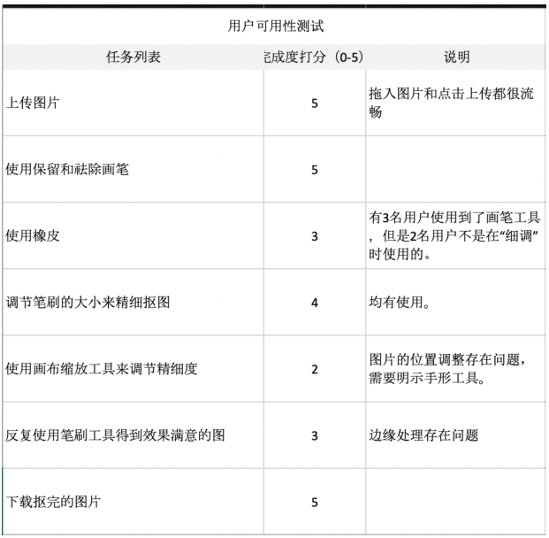发现
我们的分析揭示了以下关键洞察：
- 1. 设计师倾向于以类似 Photoshop 的蒙版操作的方式处理任务，这与我们预期的交互不符。 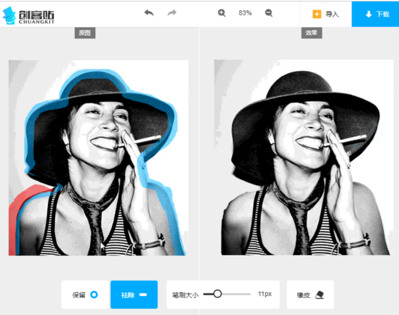
- 2. 当图片剪辑过程超过3分钟时，用户的耐心明显减少。
- 3. 当他们的勾画超出图片边界时，用户无法进行完美的调整。
- 4. 我们一直在担心过程中不透明问题的接受度，但测试结果表明没有问题。
- 5. ...
可行的调整
根据测试洞察，我们实施了以下改进：
- 1. 我们为功能提供了更强的指导：用户第一次进入时会弹出引导视频，而且在页面底部增加了功能提示；
- 2. 我们提高了后端的图片剪辑处理效率，以减少图片剪辑时间；
- 3. 我们调整了交互控件的位置和逻辑；
- 4. ...
结论
通过不断的迭代和改进，我们努力为用户提供更高效、更直观的在线图片剪辑工具，随着用户接受和认可度的提高，慢慢减少功能提示的醒目程度。
工具：Obsidian, OmniGraffle, Axure, OmniPlan, Office细节的力量
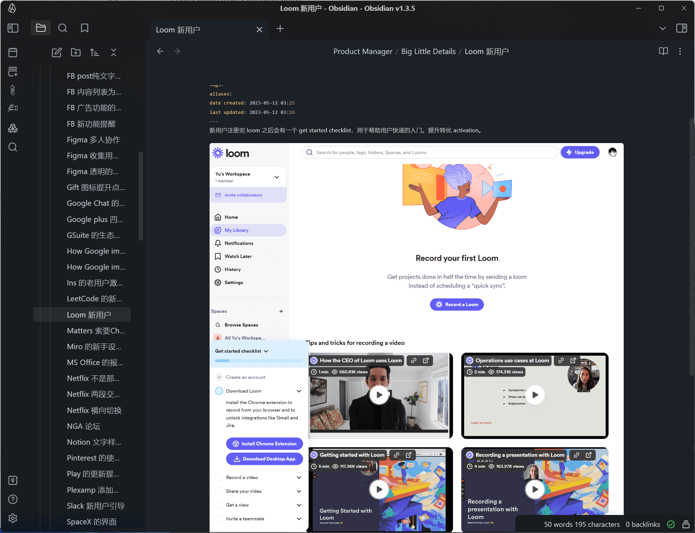我非常注重产品的细节，并且喜欢尝试新产品，我收集各种产品的每一个好的细节。
我已经收集了这些多年，现在我在 Obsidian 的帮助下管理它们。
工作流和序列图
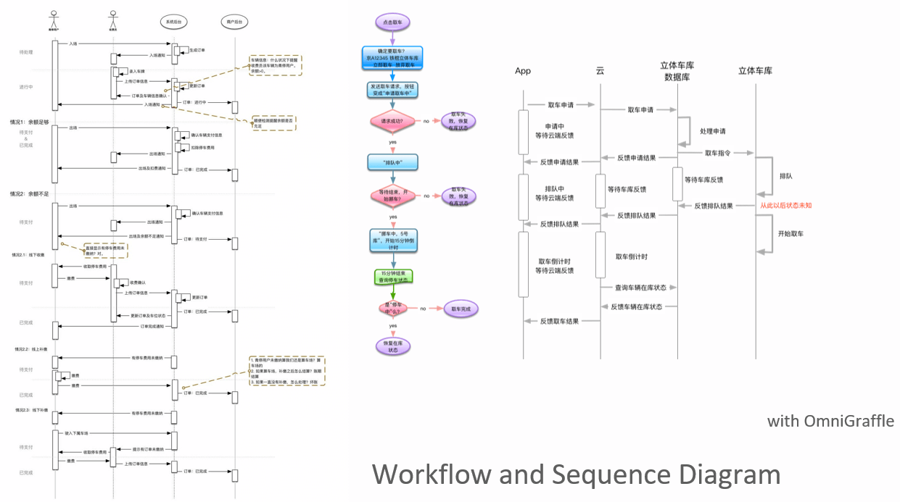注册停车场和支付停车费的工作流和序列图
使用 OmniGraffle 绘制。
项目管理
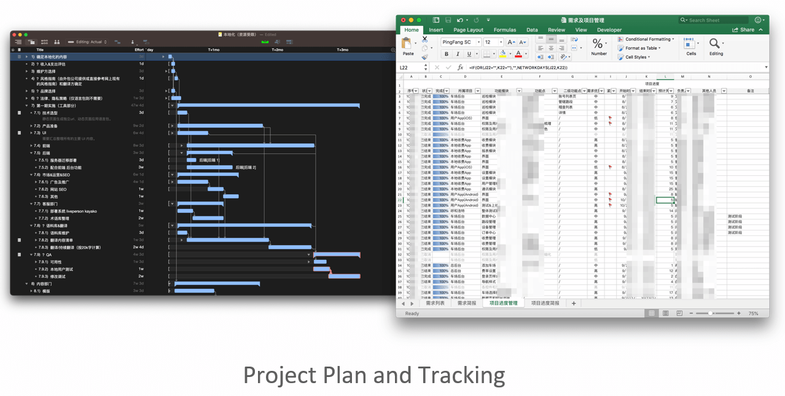使用 OmniPlan 制定项目计划并使用 Excel 跟踪任务。
过去的方式现在看来过时了，现在我们有更好的在线看板如 trello 来跟踪项目状态。
- 观点行业相关的文章
-
 2020 07.16
2020 07.16
-
2020 09.01
-
2018 05.28
- 我的简历获取简历副本